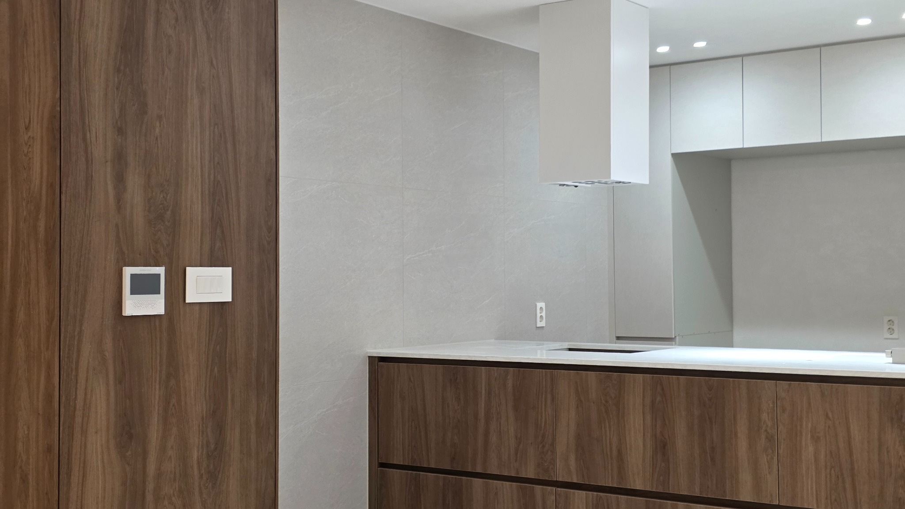
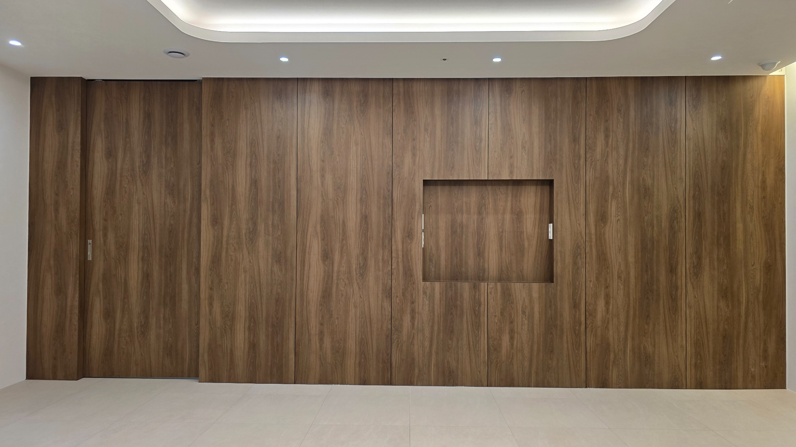
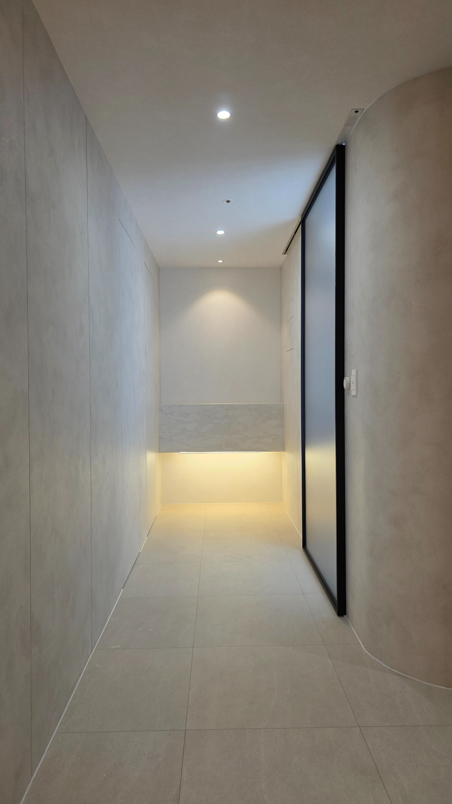

RECENT PROJECTS · 01 / 03
INTERIOR DESIGN & CONSTRUCTION
Spaces designed
for living.
RECENT WORKS
최근 작업 기준으로
메인에는 5개만 보여줍니다.
메인 랜딩페이지에서는 최신 프로젝트 중심으로 5개만 선별 노출하고, 나머지 사진과 자료는 각 프로젝트 상세페이지와 아카이브에서 확장하는 구조로 구성했습니다.
LATEST 05 · SAMPLE CURATION


ABOUT TODAH
TODAH
תודה
TODAH는 히브리어로 ‘감사’를 뜻합니다.
공간을 맡겨주신 마음에 감사하며, 좋은 디자인과 완성도 있는 시공으로 그 마음에 답하고자 합니다.
공간을 맡겨주신 마음에 감사하며, 좋은 디자인과 완성도 있는 시공으로 그 마음에 답하고자 합니다.
메인에서는 작업의 분위기를 먼저 보여주고, 상세페이지에서 공간별 설명, 디테일, 공정 흐름, Before/After, 더 많은 사진을 차분하게 확장하는 구조를 추천합니다.
OUR APPROACH
01
CURATE
많은 사진을 그대로 나열하지 않고 대표컷, 디테일컷, 공정컷으로 선별합니다.
02
COMPOSE
메인, 프로젝트 상세, 인스타 피드, 스토리용으로 각 채널에 맞는 배치와 비율을 구성합니다.
03
CONNECT
홈페이지 포트폴리오와 인스타그램 피드가 하나의 운영 흐름으로 이어지도록 설계합니다.
PROJECT HIGHLIGHTS
우드 월 마감과 히든 도어 처리

HIGHLIGHT 02복도 공간의 간접조명과 미니멀한 동선 정리
PROCESS
01
Photo Sorting
원본 사진을 대표컷, 디테일, 공정컷으로 분류합니다.
02
Select Main Cuts
메인에 노출할 5개의 대표 이미지와 메인 슬라이드를 선정합니다.
03
Project Detail
상세페이지용 흐름과 설명 문장을 구성합니다.
04
Instagram Feed
피드, 스토리, 카드뉴스용 비율로 재편집합니다.
05
Archive
전체 프로젝트와 사용하지 않은 컷은 아카이브에 축적합니다.
FOLLOW OUR WORK
INSTAGRAM · @todah_153
JOURNAL
PROJECT NOTE
우드 톤과 라이트 그레이를 조합한 주방 디자인
소재 대비와 밝기 밸런스를 통해 단정한 분위기를 만든 사례입니다.
DETAIL NOTE
현관 공간을 차분하게 만드는 간접조명 계획
라인조명, 프레임, 동선 정리가 만드는 첫인상을 정리할 수 있습니다.
DESIGN GUIDE
복도 공간도 프로젝트의 톤을 완성하는 중요한 장면입니다
메인 공간 못지않게 작은 공간의 정리 방식이 전체 완성도를 좌우합니다.
CONTACT
공간에 대해
이야기해주세요.
전화, 카카오톡, 이메일 세 가지 채널만 남기고 상담 동선을 단순하게 유지합니다.